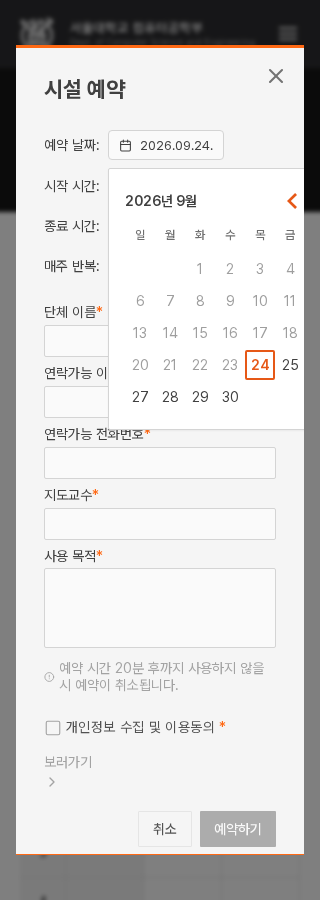
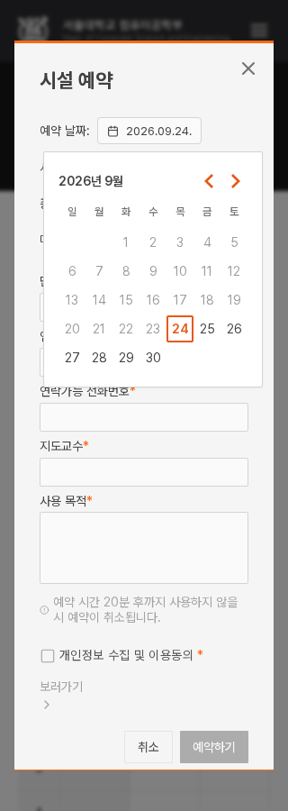
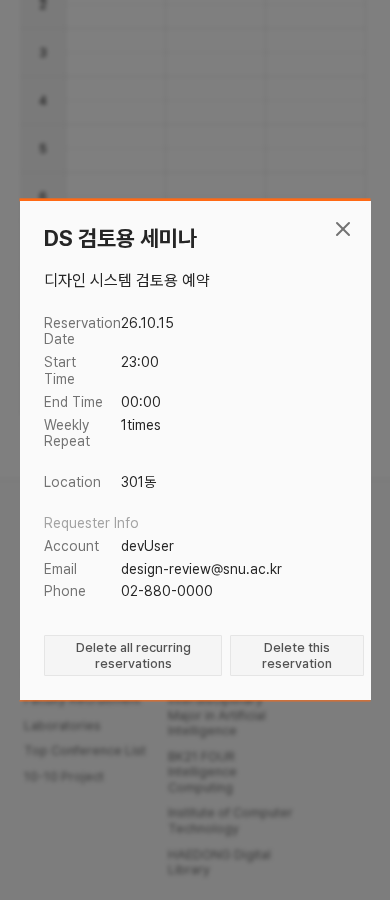
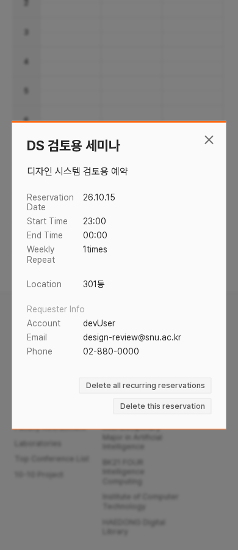

작은 화면의 기준과 예약창
관련 판단 3개 · 아래 새 제안은 앱 미적용먼저, 승인한 두 가지는 적용했어
DS-026: 예약 입력칸을 좁은 창 안에 맞췄다. 한·영 14개 기본 상태와 날짜 펼침 10개를 확인했고, 데스크톱 승인 이미지가 동일하다. 낮은 창에서도 취소 버튼으로 스크롤할 수 있다. 실제 입력 폭 견본.
DS-027: 하단 요약을 유지하며 필드 아래에도 오류를 표시한다. 21개 폼 모듈42개 필드 묶음에 연결했고 공지·직원에서 오류 표시·수정 후 해제·언어별 연결을 확인했다. 실제 오류 견본.
실제 적용된 제목 오류

이미 확정한 DS-020 초점도 Button·태그 체크·모달 닫기에 연결했다. 기본 모양을 유지하고 키보드 초점만 같은2px/간격2px로 표시한다. 컴포넌트 적용 현황.
1. 앞으로 어디까지 확인할까? · V-Q1
추천 기준: 공개 화면·일반 이용자의 예약은 320px부터, 행정실 편집·관리는 1200px부터 검증한다. 작은 창에서 문제를 발견했을 때 수정할 범위를 명확히 하려는 기준이다.
320px는 좁은 공개 화면에서 날짜 잘림을 드러냈다. 편집·관리는 합의한 데스크톱 중심 범위이며, 기존 1200/1280/1440px 24상태 조사와 연결된다. 모바일 편집 최적화를 필수 범위에 넣지 않는다.
지원·검증의 목표를 정하는 안이다. 지금 320px 이상 모든 페이지가 통과했다는 뜻은 아니다. 남은 컴포넌트와 통합 검증에서 이 기준을 적용한다. 화면 폭은 기기 해상도가 아닌 브라우저 안쪽의 CSS px다.
2. 좁은 창의 날짜 팝오버 · R-Q1
문제: 날짜 버튼 왼쪽에 맞춰 펼치는 244px 달력이 320·360px 화면에서는 창 밖으로 넘친다. 날짜 숫자와 이동 버튼을 줄일 필요는 없다.
추천: 넘치는 경우에만 팝오버를 왼쪽으로 이동해 창 안에 넣는다. 기존 날짜 버튼과 달력 크기는 유지한다. 390px처럼 이미 들어오는 장면은 그대로다.
현재

추천 · 넘칠 때만 안쪽으로

3. 예약 상세의 행·버튼 배치 · R-Q2
문제: 390px 창의 내부보다 내용의 최소 폭이 커서 오른쪽 여백이 깨진다. 영어 “Reservation”은 65px 항목명 칸을 넘어 날짜 값과 붙고, 삭제 버튼 두 개도 같은 줄에 눌려 들어간다.
추천: 작은 창에서 내용 최소 폭을 풀고, 긴 값은 줄바꿈한다. 영어 항목명 칸은 80px로 넓혀 값과 분리한다. 버튼은 공간이 부족하면 다음 줄로 넘긴다. 한국어의 기존 항목명65px와 데스크톱 창 폭은 유지한다.
현재

추천 · 항목 정렬과 버튼 줄바꿈

이번에 함께 정할 사항
- 검증 기준: 공개·예약320px부터 / 편집·관리1200px부터로 잡을까?
- 날짜: 넘칠 때만 팝오버 위치를 창 안으로 보정할까?
- 예약 상세: 추천한 항목명 폭·값 줄바꿈·버튼 줄바꿈을 적용할까?
추천은 세 가지 모두 적용이다. 서로 다른 선택도 가능하다. 승인 전이라 이 묶음의 제안은 아직 앱에 넣지 않았다.